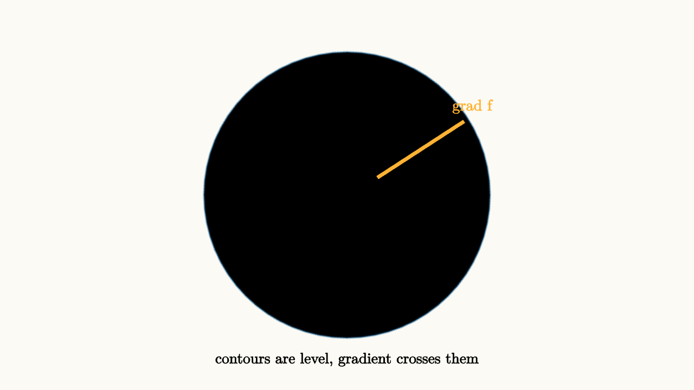

The Gradient Points Uphill
Partial derivatives measure slope in the coordinate directions. The gradient packages them into a vector:
That vector lives in the input plane, not floating on the surface. It points in the direction where the function increases fastest. Its length is the steepest directional derivative.

source
background = [0.985, 0.98, 0.955, 1]
camera = Camera(4b)
mesh diagram = block {
for (r in [0.45, 0.85, 1.25, 1.65]) {
. stroke{alpha{0.45} BLUE, 2} Circle(r)
}
. stroke{ORANGE, 4} Line(start: [0.35, 0.2, 0], end: [1.35, 0.85, 0])
. center{[1.45, 1.02, 0]} color{ORANGE} Text("grad f", 0.64)
. center{[0, -1.9, 0]} color{BLACK} Text("contours are level, gradient crosses them", 0.62)
}A clean way to see this is through contour lines. A contour line is a set of input points where $f(x,y)$ has the same value. Walking along a contour changes position but does not change height. So the directional derivative along the contour is zero.
The gradient is perpendicular to the contour because dot products measure directional change:
If $\mathbf u$ points along a level curve, then $D_{\mathbf u}f=0$, so $\nabla f$ must be perpendicular to that tangent direction.
The same formula explains steepest increase. For unit vectors $\mathbf u$,
is largest when $\mathbf u$ points in the same direction as $\nabla f$. It is most negative in the opposite direction. It is zero in directions perpendicular to the gradient.
source
background = [0.985, 0.98, 0.955, 1]
camera = Camera(4b)
let Field = |turn| block {
for (r in [0.45, 0.85, 1.25, 1.65]) {
. stroke{alpha{0.42} BLUE, 2} Circle(r)
}
. stroke{ORANGE, 4} rotate{turn} Line(start: [0.4, 0, 0], end: [1.45, 0, 0])
. center{[0, 1.95, 0]} color{BLACK} Text("directional derivative = dot product", 0.62)
}
"gradient"
mesh field = Field(turn: 0.0)
mesh label = center{[1.35, -0.45, 0]} color{ORANGE} Text("uphill", 0.64)
play Write(0.8)
play Fade(0.4)
"turn"
field.turn = 1.5708
label = center{[0.1, 1.25, 0]} color{ORANGE} Text("zero along level", 0.62)
play [Lerp(1.1, [&field]), Trans(0.8, [&label])]For example, let
The contours are circles centered at the origin. The gradient is
At each point, it points directly away from the origin. That is exactly the direction in which $x^2+y^2$ grows fastest. Walking around a circle keeps the value constant, so the gradient crosses the circle at a right angle.
For a less symmetric example,
The contours are ellipses. The gradient
still crosses each contour perpendicularly, but the arrows lean more strongly in the $y$ direction because height changes faster there.
The gradient is a local instruction. It tells where to step for the greatest immediate increase, not where the global maximum lives. On a winding mountain surface, following the gradient is like always choosing the steepest visible uphill direction. It may lead to a nearby peak, a ridge, or a place where the slope disappears. The geometry is local, and that local geometry is already powerful.